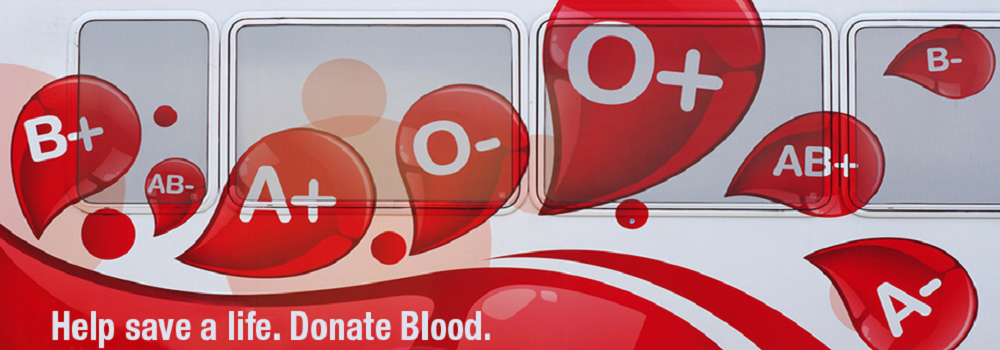
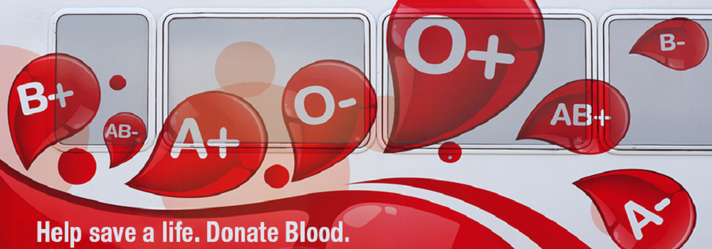

Blood Management Group:Badhon,JU
Introduction:
Blood Donor Recruitment (BDR) is the process of drawing blood from a voluntary BloodDonor (BD) for future blood transfusion.The Blood Bank Management System has been created with a purpose of replacing all of paperwork done at the Blood Bank. All aspects of blood banking, be it donor record management, component management, crossmatching, blood issue, billing and inventory, all is completely managed by the software. The system boasts in variety and number of reports made available for analysis, legal documentation and insight
General Objective:
The main objective of the study was to create electronic blood donor managementinformation system in order to assist in the management of blood donor records, planningand share information in a more confidential, convenient and secure way using moderntechnology.
Specific Objectives:
To conduct a study on blood donor managementTo design an electronic blood donor management systemTo validate the design using a prototype
Proposed system
The Blood Bank Management System has been created with a purpose of replacing all of paperwork done at the Blood Bank. All aspects of blood banking, be it donor record management, component management, crossmatching, blood issue, billing and inventory, all is completely managed by the software. The system boasts in variety and number of reports made available for analysis, legal documentation and insight
Project functionality:
purpose of this study was to develop a blood management information system toassist in the management of blood donor records and ease/or control the distribution ofblood in various parts of the country basing on the hospital demands. Without quick andtimely access to donor records, creating market strategies for blood donation, lobbyingand sensitization of blood donors becomes very difficult.The blood management information system offers functionalities to quick access to donorrecords collected from various parts of the country. It enables monitoring of the resultsand performance of the blood donation activity such that relevant and measurableobjectives of the organization can be checked.It provides to management timely, confidential and secure medical reports that facilitatesplanning and decision making and hence improved medical service delivery. The reportsgenerated by the system give answers to most of the challenges management faces as faras blood donor records are concerned.
Blood bank management information system to donors:
- It provides the unique identification number at the time of blood donation camp which helps him for the
- It provides the unique identification number at the time of blood donation camp which helps him for the future correspondence. MIS gives the unique user id and password for those donors who are applying online. They can edit their information time to time. This feature helps administrator to collect the information of all the donors area wise and blood group wise.
- Donors can view the blood donation camp organising at the different places.
- As it is a web based application, its index page encourages the donor to donate the blood.
- Donor can also check his blood group medical status whether it is healthy or unhealthy.
- Donor can check the status of the particular blood group just on one click sitting at home.
Benefits of blood bank management information system to seekers:
- Seeker can get the information of the desired blood group from the central inventory
- Seeker can get the list of donors’ area wise, blood group wise if the desired blood group is n ot available in the central inventory.
- Seeker can get the information of the particular blood group available in the blood bank.
- Seeker can get the information of that blood group which is not fit for blood transfusion.
- Seeker can get the blood units according to his requirement from the blood bank.
Conclusion:
In the world of information technology where whole world is becomes global village, where end user can get the information just sitting at home on one click. In fact government has taken a step in order to transform the system. Management information system helps to make the system paper less. Now the end user has to enrol himself and his job is done. All the money transaction is made possible because of the management information system. Researcher believes that by developing the management information system for the blood